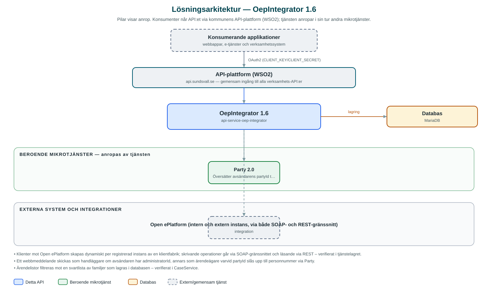

OepIntegrator
Gemensam ingång till kommunens e-tjänsteplattform Open ePlatform – för att hämta ärenden, sätta status och skicka webbmeddelanden till invånarnas sidor.
Om API:et
Open ePlatform är kommunens e-tjänsteplattform där invånare lämnar in ansökningar och följer sina ärenden. OepIntegrator kapslar in plattformens egna SOAP- och REST-gränssnitt bakom ett modernt API, så att kommunens verksamhetssystem slipper integrera direkt mot plattformen. API:et används bland annat av Messaging för att leverera webbmeddelanden till mottagarens sidor på e-tjänsteplattformen.
Genom API:et kan anropande system hämta ärenden (flow instances) per familj eller part, läsa ärendestatus, hämta ärendet som PDF, sätta ny status, bekräfta leverans samt skicka och läsa webbmeddelanden med bilagor. Plattformen finns i en intern och en extern instans, och anroparen väljer instans i API-vägen.
Vilka Open ePlatform-miljöer som ska anropas konfigureras via API:et självt: instanser med adress och autentiseringsuppgifter registreras per kommun och lagras i databasen, med krypterade lösenord. Det gör att nya miljöer kan kopplas på utan omdriftsättning.
Det här gör API:et
- Ärenden – Hämtar ärenden från e-tjänsteplattformen per familj eller part, inklusive ärendestatus, bilagor och ärendet som PDF.
- Statusuppdatering – Sätter ny status på ett ärende och bekräftar leverans (confirm delivery) mot plattformen.
- Webbmeddelanden – Skickar webbmeddelanden med bilagor till ett ärende – som handläggare eller för ärendeägarens räkning – och hämtar meddelandehistorik per familj eller ärende.
- Multisigneringsärenden – Hämtar ärenden som väntar på medsignering, per part eller användare.
- Instanskonfiguration – Registrerar, uppdaterar och tar bort Open ePlatform-instanser (intern/extern) per kommun via API:et; autentiseringsuppgifter lagras krypterat.
- Svartlistning – Familjer kan svartlistas i databasen och filtreras då bort ur ärendelistorna.
API-dokumentation
API:ets samtliga resurser, parametrar och datamodeller finns beskrivna i en OpenAPI-specifikation som är hämtad ur källkodsförrådet. Den kan utforskas interaktivt i Swagger UI eller laddas ner som YAML.
Teknisk dokumentation
Nedan beskrivs hur tjänsten är uppbyggd, vilka andra tjänster den anropar och vad som krävs för att driftsätta den. Informationen är härledd ur källkoden och dess konfiguration på GitHub.
Arkitektur

API:et är en mikrotjänst (Java 25, Spring Boot via kommunens gemensamma tjänsteplattform dept44 (8.0.8), byggd med Maven). Konsumenter når tjänsten via kommunens gemensamma API-plattform (WSO2) på api.sundsvall.se – tjänsten anropas aldrig direkt. Tjänsten anropar i sin tur andra mikrotjänster i kommunens tjänstelandskap. Lagring: MariaDB med Flyway-migrationer; lagrar instanskonfiguration (med krypterade lösenord) och svartlistade familjer. Övriga integrationer som förekommer i koden: Open ePlatform (intern och extern instans, via både SOAP- och REST-gränssnitt).
Teknikstack
- Språk: Java 25
- Ramverk: Spring Boot via kommunens gemensamma tjänsteplattform dept44 (8.0.8), byggd med Maven
- Databas: MariaDB med Flyway-migrationer; lagrar instanskonfiguration (med krypterade lösenord) och svartlistade familjer
- Övrigt: SOAP-klient genererad ur Open ePlatforms WSDL (jaxb-maven-plugin), Feign-klienter, Resilience4j (circuit breakers), Logbook för anropsloggning
Beroenden till andra mikrotjänster
Tjänsten anropar följande mikrotjänster. Versionerna är hämtade ur källkodens integrationsklienter.
| Tjänst | Version | Användning |
|---|---|---|
| Party | 2.0 | Översätter avsändarens partyId till personnummer när ett webbmeddelande skickas för ärendeägarens räkning. |
Konfiguration och driftsättning
- application.yml med OAuth2-klientuppgifter för Party-integrationen
- MariaDB-anslutning; databasschemat versionshanteras med Flyway
- Krypteringsnyckel för instansernas lösenord
- Open ePlatform-instanser (adress och autentiseringsuppgifter) registreras via API:et och lagras i databasen – inte i konfigurationsfiler
- Anrop görs per kommun och instanstyp – municipalityId och instanceType ingår i API-vägarna
Noterbart ur källkoden
- Klienter mot Open ePlatform skapas dynamiskt per registrerad instans av en klientfabrik; skrivande operationer går via SOAP-gränssnittet och läsande via REST – verifierat i tjänstelagret.
- Ett webbmeddelande skickas som handläggare om avsändaren har administratorId, annars som ärendeägare varvid partyId slås upp till personnummer via Party.
- Ärendelistor filtreras mot en svartlista av familjer som lagras i databasen – verifierat i CaseService.
- Base64-innehåll i SOAP-anropens EncodedData-element maskeras i anropsloggarna via Logbook-filter.
Källkod
Källkoden är öppen och finns hos Sundsvalls kommun på GitHub. I källkodsförrådet finns även instruktioner för att klona, konfigurera och starta tjänsten i egen miljö.